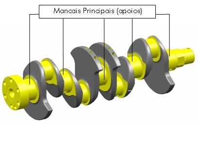
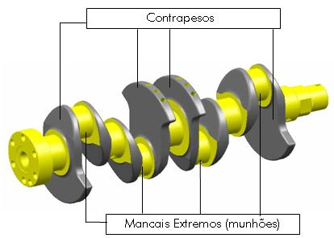
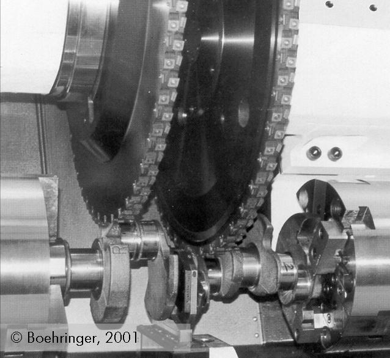
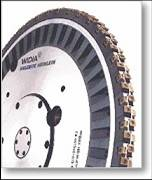

LMP>Linhas de Pesquisa>SIMUS>Fresamento Externo de Virabrequins
O virabrequim é um dos componentes de grande importância num motor automotivo, cuja função é a transformação do movimento linear alternado dos pistões em movimento rotativo. Este componente apresenta geometria complexa, tornando necessário, para a sua fabricação, o emprego de vários processos, desde furação até a aplicação de processos especiais como torno-brochamento (Drehräumen) e fresamento periférico externo circunferencial excêntrico de mergulho (Aussenfräsen).   O fresamento externo, aplicado na usinagem dos munhões do virabrequim, torna-se uma operação complexa por se tratar de uma usinagem fora de centro, onde o centro de giro do virabrequim não coincide com o centro de giro de usinagem, que neste caso é o centro do munhão. Para o estudo experimental do processo e a otimização dos resultados de trabalho seria necessária a execução de um grande número de ensaios, impossibilitando técnica e financeiramente o trabalho. Uma possibilidade para a otimização desse processo pode ser alcançada empregando o método da simulação em computador. OBJETIVOSO objetivo então é modelar e simular a seção do cavaco teórico no processo de fresamento externo e estudar a influência da variação da espessura de usinagem na força de usinagem e no mecanismo de desgaste da ferramenta. PROCEDIMENTOA modelagem do processo foi feita a partir da observação do movimento relativo da ferramenta de corte e o virabrequim. O equacionamento da cinemática do processo é bastante complexo, já que o eixo de rotação do virabrequim não coincide com o centro de rotação do munhão.   A partir da simulação da cinemática do processo, com a determinação da trajetória entre dois gumes sucessivos e da espessura de usinagem, pode-se estimar os esforços que ocorrem durante o processo de corte utilizando modelos de força relacionadas ao processo de formação do cavaco. O conhecimento das componentes das forças de usinagem permite um maior domínio do processo e uma conseqüente otimização do mesmo. Esta análise tem enfoque na cinemática do processo, de forma a obter o comprimento de contato da ferramenta durante o corte, a espessura de usinagem e a maior espessura de usinagem para o fresamento externo concordante e discordante, e posterior análise das forças através da aplicação do modelo clássico de força proposto por Kienzle. RESULTADOSA simulação do processo de fresamento externo mostrou-se viável, permitindo melhor compreensão do processo, permitindo a verificação de diversas condições de corte sem a necessidade de ensaios. O processo de formação de cavaco teórico foi descrito de maneira prevista, em forma de vírgula. Os modelos desenvolvidos permitiram a determinação da espessura de usinagem teórica, assim como a força de corte e as solicitações atuantes durante o processo. |
| Contato:
SIMUS Rolf Bertrand Schroeter Prof. Dr. Eng. |
Última Atualização 21.06.2006 |